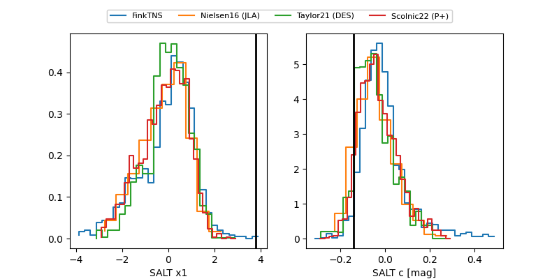

FINK: ZTF25abqobyt
Lasair: ZTF25abqobyt
ALeRCE: ZTF25abqobyt
ZTF25abqobyt (ztf,fink)
equatorial (ra, dec) = (25.7922,-1.45697)
galactic (l, b) = (150.8833,-61.48904)

last ztfr=20.57
2 ztfr detections